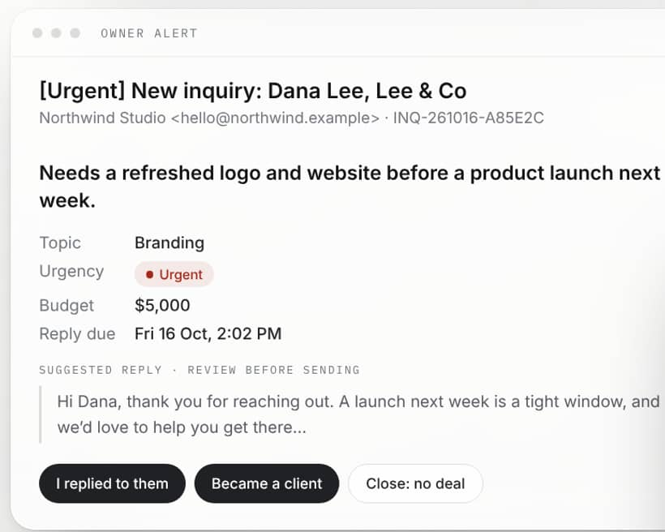

Start here · v1.0.1
Flow
Every inquiry, answered on time.
This guide gets your website inquiries flowing through your own n8n in about an hour. Page 2 is your setup checklist; page 3 explains the day to day and how to get help.
Have these ready
n8n, Cloud or self hosted with Data tables
An Anthropic API key
A Resend account and API key
Access to your domain’s DNS
Optional: a Cloudflare account
Your purchase
Your plan, order reference and the date your setup help ends are in your download email.
Need help? Reply to that email with the step number from page 2 and what you see.
Benjaire Flow · setup checklistAbout 80 minutes
Six steps, in folder order.
01Add two credentials in n8nBearer Auth named Resend API with your Resend key, and Anthropic named Anthropic with your API key.
5 min
02Create the tables · 1-tablesCreate flow_settings, flow_inquiries and flow_events from the CSVs, then delete each sample row. Keep exactly one settings row.
10 min
03Fill your settings · 2-presetsStart from the closest preset, replace every example value, and make an intake key with openssl rand -hex 24.
15 min
04Import the workflows · 3-workflowsImport 0 to 5. Pick your credentials, set Error workflow to Flow · 0 Error alerts, and set your time zone. Publish 0, then 1 to 4.
15 min
05Connect your form · 4-websiteUse the Cloudflare Worker (guides/cloudflare.md) or a server forwarder. Never put the intake key in browser code.
15 min
06Test before going live · 5-testRun curl-test.sh: an owner alert should arrive within a minute. Then work through the 17 checks in test-checklist.md.
20 min
Form returns 401?The intake key in your Worker or server does not match intake_key in your settings. Copy it again with no spaces.
No emails at all?Select Resend API in each email node and verify your sending domain in Resend.
Benjaire Flow · day to day
Once it is live, you only press buttons.

Every inquiryAn alert with a summary, urgency, budget and a suggested reply for you to review. Flow never sends an AI written reply to a prospect.
Weekdays9am, 1pm and 5pm: one reminder for anything past its reply target.
Mondays 8amYour digest: new inquiries, wins, losses, time to handle and who is still waiting.
If anything failsAn error alert names the workflow and step, with no customer data.
Getting helpReply to your download email with the step number and what you see. Starter: setup help by email for 14 days. Professional: email support for 60 days and your setup call.
Updates and your dataBug fix updates to v1.x for 12 months; see CHANGELOG.md. All inquiry data stays in your own n8n. Benjaire never has access.